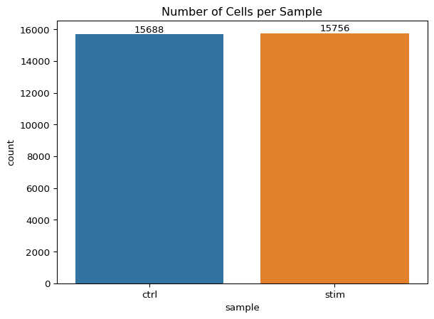
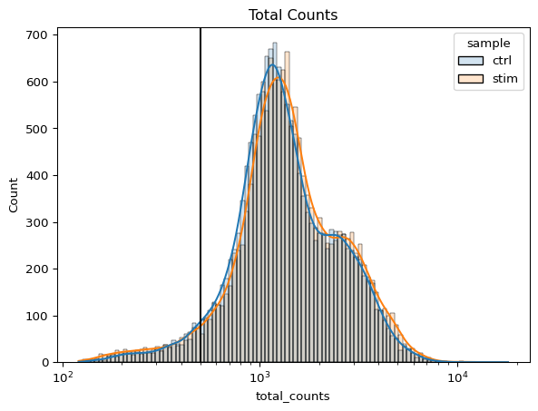
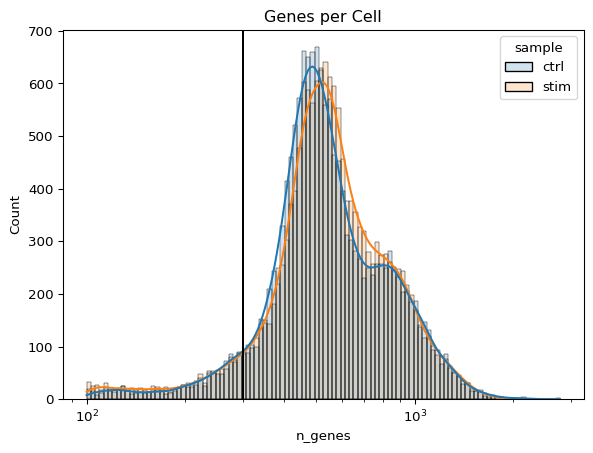
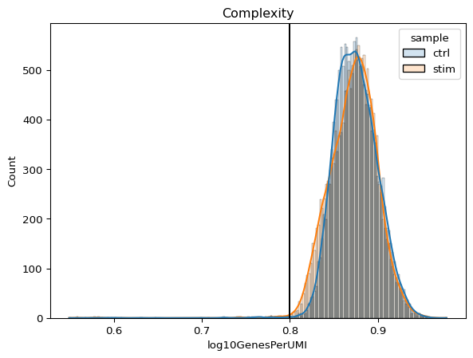
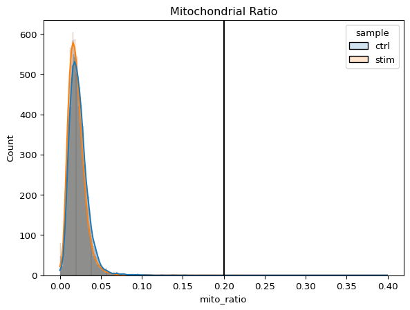
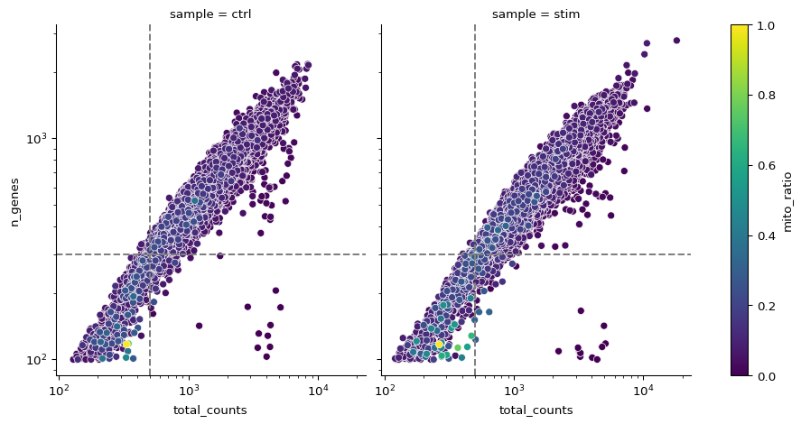

Mary Piper, Lorena Pantano, Meeta Mistry, Radhika Khetani, Jihe Liu
Published
Invalid Date
Approximate time: 90 minutes
Learning Objectives:
Construct quality control metrics and visually evaluate the quality of the data
Apply appropriate filters to remove low quality cells
Quality control
Each step of this workflow has its own goals and challenges. For QC of our raw count data, they include:
Goals:
To filter the data to only include true cells that are of high quality, so that when we cluster our cells it is easier to identify distinct cell type populations
To identify any failed samples and either try to salvage the data or remove from analysis, in addition to, trying to understand why the sample failed
Challenges:
Delineating cells that are poor quality from less complex cells
Choosing appropriate thresholds for filtering, so as to keep high quality cells without removing biologically relevant cell types
Recommendations:
Have a good idea of your expectations for the cell types to be present prior to performing the QC. For instance, do you expect to have low complexity cells or cells with higher levels of mitochondrial expression in your sample? If so, then we need to account for this biology when assessing the quality of our data.
Generating quality metrics
When data is loaded into an AnnData, only one column is calculated n_genes. Let’s view the data frame stored in the obs slot of our adata object:
import scanpy as scimport seaborn as snsimport numpy as npimport matplotlib.pyplot as pltadata = sc.read_h5ad("../results/03_merge.h5ad")adata.obs.head()
n_genes
sample
AAACATACAATGCC-1_ctrl
874
ctrl
AAACATACATTTCC-1_ctrl
896
ctrl
AAACATACCAGAAA-1_ctrl
725
ctrl
AAACATACCAGCTA-1_ctrl
979
ctrl
AAACATACCATGCA-1_ctrl
362
ctrl
In order to create the appropriate plots for the quality control analysis, we need to calculate some additional metrics. These include:
Number of counts per cell total counts in a cell
Number of genes detected per UMI: this metric with give us an idea of the complexity of our dataset (more genes detected per UMI, more complex our data)
Mitochondrial ratio: this metric will give us a percentage of cell reads originating from the mitochondrial genes
To calculate these values, we can use the calculate_qc_metrics() function to automatically generate scores for each cell.
Now that we have generated the various metrics to assess, we can explore them with visualizations. We will assess various metrics and then decide on which cells are low quality and should be removed from the analysis:
Cell counts
UMI counts per cell
Genes detected per cell
Complexity (novelty score)
Mitochondrial counts ratio
What about doublets?
In single-cell RNA sequencing experiments, doublets are generated from two cells. They typically arise due to errors in cell sorting or capture, especially in droplet-based protocols involving thousands of cells. Doublets are obviously undesirable when the aim is to characterize populations at the single-cell level. In particular, they can incorrectly suggest the existence of intermediate populations or transitory states that do not actually exist. Thus, it is desirable to remove doublet libraries so that they do not compromise interpretation of the results.
Many workflows use maximum thresholds for UMIs or genes, with the idea that a much higher number of reads or genes detected indicate multiple cells. While this rationale seems to be intuitive, it is not accurate. Also, many of the tools used to detect doublets tend to get rid of cells with intermediate or continuous phenotypes, although they may work well on datasets with very discrete cell types. Scrublet is a popular tool for doublet detection. At this point in an analysis, we recommend not including any thresholds at this point in time. When we have identified markers for each of the clusters, we suggest exploring the markers to determine whether the markers apply to more than one cell type.
The scanpy package does include an implementation of the Scrublet algorithm that can be applied like so:
sc.pp.scrublet(adata, batch_key="sample")
Cell counts
The cell counts are determined by the number of unique cellular barcodes detected. For this experiment, between 12,000 - 13,000 cells are expected.
In an ideal world, you would expect the number of unique cellular barcodes to correpsond to the number of cells you loaded. However, this is not the case as capture rates of cells are only a proportion of what is loaded. For example, the inDrops cell capture efficiency is higher (70-80%) compared to 10X which is between 50-60%.
Capture Efficiency
The capture efficiency could appear much lower if the cell concentration used for library preparation was not accurate. Cell concentration should NOT be determined by FACS machine or Bioanalyzer (these tools are not accurate for concentration determination), instead use a hemocytometer or automated cell counter for calculation of cell concentration.
The cell numbers can also vary by protocol, producing cell numbers that are much higher than what we loaded. For example, during the inDrops protocol, the cellular barcodes are present in the hydrogels, which are encapsulated in the droplets with a single cell and lysis/reaction mixture. While each hydrogel should have a single cellular barcode associated with it, occasionally a hydrogel can have more than one cellular barcode. Similarly, with the 10X protocol there is a chance of obtaining only a barcoded bead in the emulsion droplet (GEM) and no actual cell. Both of these, in addition to the presence of dying cells can lead to a higher number of cellular barcodes than cells.
ax = sns.countplot(data=adata.obs, x="sample", hue="sample")ax.set_title("Number of Cells per Sample")# Add counts above the barsfor container in ax.containers: ax.bar_label(container)plt.show()

We see over 15,000 cells per sample, which is quite a bit more than the 12-13,000 expected. It is clear that we likely have some junk ‘cells’ present.
UMI counts (transcripts) per cell
The UMI counts per cell should generally be above 500, that is the low end of what we expect. If UMI counts are between 500-1000 counts, it is usable but the cells probably should have been sequenced more deeply.
ax = sns.histplot(adata.obs, x="total_counts", hue="sample", kde=True, # adds line showing general trend log_scale=True, # apply log scale to counts alpha=0.2)ax.set_title("Total Counts")# Add line showing potential thresholdax.axvline(500, color="black")

We can see that majority of our cells in both samples have 1000 UMIs or greater, which is great.
Genes detected per cell
We have similar expectations for gene detection as for UMI detection, although it may be a bit lower than UMIs. For high quality data, the proportional histogram should contain a single large peak that represents cells that were encapsulated. If we see a small shoulder to the left of the major peak (not present in our data), or a bimodal distribution of the cells, that can indicate a couple of things. It might be that there are a set of cells that failed for some reason. It could also be that there are biologically different types of cells (i.e. quiescent cell populations, less complex cells of interest), and/or one type is much smaller than the other (i.e. cells with high counts may be cells that are larger in size). Therefore, this threshold should be assessed with other metrics that we describe in this lesson.
ax = sns.histplot(adata.obs, x="n_genes", hue="sample", kde=True, # adds line showing general trend log_scale=True, # apply log scale to counts alpha=0.2)ax.set_title("Genes per Cell")# Add line showing potential thresholdax.axvline(300, color="black")

Complexity
We can evaluate each cell in terms of how complex the RNA species are by using a measure called the novelty score. The novelty score is computed by taking the ratio of nGenes over nUMI. If there are many captured transcripts (high nUMI) and a low number of genes detected in a cell, this likely means that you only captured a low number of genes and simply sequenced transcripts from those lower number of genes over and over again. These low complexity (low novelty) cells could represent a specific cell type (i.e. red blood cells which lack a typical transcriptome), or could be due to an artifact or contamination. Generally, we expect the novelty score to be above 0.80 for good quality cells.
To start, let us calculate this value and add it to our metadata.
And now same as before, we will take a look at the distribution of complexity across each sample.
ax = sns.histplot(adata.obs, x="log10GenesPerUMI", hue="sample", kde=True, # adds line showing general trend alpha=0.2)ax.set_title("Complexity")# Add line showing potential thresholdax.axvline(0.8, color="black")

Mitochondrial ratio
Seurat has a convenient function that allows us to calculate the proportion of transcripts mapping to mitochondrial genes. The pp.calculate_qc_metrics() function takes in a qc_vars argument and searches through all gene identifiers in the dataset for that pattern. Since we are looking for mitochondrial genes, we are searching any gene identifiers that begin with the pattern “MT-”. For each cell, the function takes the sum of counts across all genes (features) belonging to the “Mt-” set, and then divides by the count sum for all genes (features). This value is multiplied by 100 to obtain a percentage value.
Mitochondrial gene name pattern
The pattern provided (“^MT-”) works for human gene names. You may need to adjust the pattern argument depending on your organism of interest. Additionally, if you weren’t using gene names as the gene ID then this function wouldn’t work as we have used it above as the pattern will not suffice.
For our analysis, rather than using a percentage value we would prefer to work with the ratio value. As such, we will reverse that last step performed by the function by taking the output value and dividing by 100.
sc.pp.calculate_qc_metrics(adata, qc_vars=("mito"), inplace=True)# We want the value as a ratioadata.obs["mito_ratio"] = adata.obs["pct_counts_mito"] /100adata.obs.head()
n_genes
sample
n_genes_by_counts
total_counts
log10GenesPerUMI
log1p_n_genes_by_counts
log1p_total_counts
pct_counts_in_top_50_genes
pct_counts_in_top_100_genes
pct_counts_in_top_200_genes
pct_counts_in_top_500_genes
total_counts_mito
log1p_total_counts_mito
pct_counts_mito
mito_ratio
AAACATACAATGCC-1_ctrl
874
ctrl
874
2344.0
0.872863
6.774224
7.760041
47.568259
59.129693
69.197952
84.044369
46.0
3.850147
1.962457
0.019625
AAACATACATTTCC-1_ctrl
896
ctrl
896
3125.0
0.844760
6.799056
8.047509
51.904000
63.456000
74.080000
87.328000
56.0
4.043051
1.792000
0.017920
AAACATACCAGAAA-1_ctrl
725
ctrl
725
2578.0
0.838493
6.587550
7.855157
61.947246
69.550039
78.432894
91.272304
40.0
3.713572
1.551590
0.015516
AAACATACCAGCTA-1_ctrl
979
ctrl
979
3261.0
0.851262
6.887553
8.090096
52.836553
62.557498
71.879791
85.311254
45.0
3.828641
1.379945
0.013799
AAACATACCATGCA-1_ctrl
362
ctrl
362
746.0
0.890686
5.894403
6.616065
53.887399
64.879357
78.284182
100.000000
16.0
2.833213
2.144772
0.021448
Which we then plot:
ax = sns.histplot(adata.obs, x="mito_ratio", hue="sample", kde=True, # adds line showing general trend alpha=0.2)ax.set_title("Mitochondrial Ratio")# Add line showing potential thresholdax.axvline(0.2, color="black")

Reads per cell
This is another metric that can be useful to explore; however, the workflow used would need to save this information to assess. Generally, with this metric you hope to see all of the samples with peaks in relatively the same location between 10,000 and 100,000 reads per cell.
Joint filtering effects
Considering any of these QC metrics in isolation can lead to misinterpretation of cellular signals. For example, cells with a comparatively high fraction of mitochondrial counts may be involved in respiratory processes and may be cells that you would like to keep. Likewise, other metrics can have other biological interpretations. A general rule of thumb when performing QC is to set thresholds for individual metrics to be as permissive as possible, and always consider the joint effects of these metrics. In this way, you reduce the risk of filtering out any viable cell populations.
Two metrics that are often evaluated together are the number of UMIs and the number of genes detected per cell. Here, we have plotted the number of genes versus the number of UMIs coloured by the fraction of mitochondrial reads. Jointly visualizing the count and gene thresholds and additionally overlaying the mitochondrial fraction, gives a summarized persepective of the quality per cell.
# Order dataset so values are plotted # such that largest values are on topmeta = adata.obs.sort_values('mito_ratio', ascending=True)g = sns.FacetGrid(meta, col="sample", height=5)g.map_dataframe(sns.scatterplot, x="total_counts", y="n_genes", hue="mito_ratio", palette="viridis")# Scale x,y axes by log10for ax in g.axes.flat: ax.set(xscale="log", yscale="log")# Add threshold linesg.refline(x=500, y=300)# Add colorbar for the legend sm = g.axes[0, 0].collections[0]plt.colorbar(sm, ax=g.axes, label="mito_ratio")

Good cells will generally exhibit both higher number of genes per cell and higher numbers of UMIs (upper right quadrant of the plot). Cells that are poor quality are likely to have low genes and UMIs per cell, and correspond to the data points in the bottom left quadrant of the plot. With this plot we also evaluate the slope of the line, and any scatter of data points in the bottom right hand quadrant of the plot. These cells have a high number of UMIs but only a few number of genes. These could be dying cells, but also could represent a population of a low complexity celltype (i.e red blood cells).
Mitochondrial read fractions are only high in particularly low count cells with few detected genes (darker colored data points). This could be indicative of damaged/dying cells whose cytoplasmic mRNA has leaked out through a broken membrane, and thus, only mRNA located in the mitochondria is still conserved. We can see from the plot, that these cells are filtered out by our count and gene number thresholds.
Filtering
Cell-level filtering
Now that we have visualized the various metrics, we can decide on the thresholds to apply which will result in the removal of low quality cells. Often the recommendations mentioned earlier are a rough guideline, and the specific experiment needs to inform the exact thresholds chosen. We will use the following thresholds:
nUMI > 500
nGene > 250
log10GenesPerUMI > 0.8
mitoRatio < 0.2
Let’s take a look at our object before filtration:
Within our data we will have many genes with zero counts. These genes can dramatically reduce the average expression for a cell and so we will remove them from our data.
Now, we will perform some filtering by prevalence. If a gene is only expressed in a handful of cells, it is not particularly meaningful as it still brings down the averages for all other cells it is not expressed in. For our data we choose to keep only genes which are expressed in 10 or more cells. By using this filter, genes which have zero counts in all cells will effectively be removed.
After performing the filtering, it’s recommended to look back over the metrics to make sure that your data matches your expectations and is good for downstream analysis.
Extract the new metadata from the filtered object using the code provided below:
# Save filtered subset to new metadatametadata_clean = adata_filt.obs
Perform all of the same QC plots using the filtered data.
Report the number of cells left for each sample, and comment on whether the number of cells removed is high or low. Can you give reasons why this number is still not ~12K (which is how many cells were loaded for the experiment)?
After filtering for nGene per cell, you should still observe a small shoulder to the right of the main peak. What might this shoulder represent?
When plotting the nGene against nUMI do you observe any data points in the bottom right quadrant of the plot? What can you say about these cells that have been removed?
Saving filtered cells
Based on these QC metrics we would identify any failed samples and move forward with our filtered cells. Often we iterate through the QC metrics using different filtering criteria; it is not necessarily a linear process. When satisfied with the filtering criteria, we would save our filtered cell object for clustering and marker identification.
The data we are working with is pretty good quality. If you are interested in knowing what ‘bad’ data might look like when performing QC, we have some materials linked here where we explore similar QC metrics of a poor quality sample.
Source Code
---title: "Quality Control Analysis"author: "Mary Piper, Lorena Pantano, Meeta Mistry, Radhika Khetani, Jihe Liu"date: Monday, February 24th, 2020---Approximate time: 90 minutes# Learning Objectives:* Construct quality control metrics and visually evaluate the quality of the data* Apply appropriate filters to remove low quality cells# Quality control<img src="../img/sc_workflow_2022.jpg" width="630">***Each step of this workflow has its own goals and challenges. For QC of our raw count data, they include:_**Goals:**_ - _To **filter the data to only include true cells that are of high quality**, so that when we cluster our cells it is easier to identify distinct cell type populations_ - _To **identify any failed samples** and either try to salvage the data or remove from analysis, in addition to, trying to understand why the sample failed__**Challenges:**_ - _Delineating cells that are **poor quality from less complex cells**_ - _Choosing appropriate thresholds for filtering, so as to **keep high quality cells without removing biologically relevant cell types**__**Recommendations:**_ - _Have a good idea of your expectations for the **cell types to be present** prior to performing the QC. For instance, do you expect to have low complexity cells or cells with higher levels of mitochondrial expression in your sample? If so, then we need to account for this biology when assessing the quality of our data._***# Generating quality metricsWhen data is loaded into an AnnData, only one column is calculated `n_genes`. Let's view the data frame stored in the `obs` slot of our `adata` object:```{python}#| label: load_libraryimport scanpy as scimport seaborn as snsimport numpy as npimport matplotlib.pyplot as pltadata = sc.read_h5ad("../results/03_merge.h5ad")adata.obs.head()```In order to create the appropriate plots for the quality control analysis, we need to calculate some additional metrics. These include:- **Number of counts per cell** total counts in a cell- **Number of genes detected per UMI:** this metric with give us an idea of the complexity of our dataset (more genes detected per UMI, more complex our data)- **Mitochondrial ratio:** this metric will give us a percentage of cell reads originating from the mitochondrial genesTo calculate these values, we can use the `calculate_qc_metrics()` function to automatically generate scores for each cell.```{python}#| label: calc_qc_metricssc.pp.calculate_qc_metrics(adata, percent_top=None, log1p=False, inplace=True)adata.obs.head()```# Assessing the quality metricsNow that we have generated the various metrics to assess, we can explore them with visualizations. We will assess various metrics and then decide on which cells are low quality and should be removed from the analysis:- Cell counts- UMI counts per cell- Genes detected per cell- Complexity (novelty score)- Mitochondrial counts ratio::: {.callout-note collapse=true}# What about doublets?In single-cell RNA sequencing experiments, doublets are generated from two cells. They typically arise due to errors in cell sorting or capture, especially in droplet-based protocols involving thousands of cells. Doublets are obviously undesirable when the aim is to characterize populations at the single-cell level. In particular, they can incorrectly suggest the existence of intermediate populations or transitory states that do not actually exist. Thus, it is desirable to remove doublet libraries so that they do not compromise interpretation of the results.Many workflows use maximum thresholds for UMIs or genes, with the idea that a much higher number of reads or genes detected indicate multiple cells. While this rationale seems to be intuitive, it is not accurate. Also, many of the tools used to detect doublets tend to get rid of cells with intermediate or continuous phenotypes, although they may work well on datasets with very discrete cell types. [Scrublet](https://github.com/AllonKleinLab/scrublet) is a popular tool for doublet detection. At this point in an analysis, we recommend not including any thresholds at this point in time. When we have identified markers for each of the clusters, we suggest exploring the markers to determine whether the markers apply to more than one cell type.The scanpy package does include an implementation of the Scrublet algorithm that can be applied like so:```{python}#| label: scrublet#| eval: falsesc.pp.scrublet(adata, batch_key="sample")```:::## Cell countsThe cell counts are determined by the number of unique cellular barcodes detected. For this experiment, between 12,000 - 13,000 cells are expected.In an ideal world, you would expect the number of unique cellular barcodes to correpsond to the number of cells you loaded. However, this is not the case as capture rates of cells are only a proportion of what is loaded. For example, the inDrops cell **capture efficiency** is higher (70-80%) compared to 10X which is between 50-60%.::: {.callout-note collapse=true}# Capture EfficiencyThe capture efficiency could appear much lower if the cell concentration used for library preparation was not accurate. Cell concentration should NOT be determined by FACS machine or Bioanalyzer (these tools are not accurate for concentration determination), instead use a hemocytometer or automated cell counter for calculation of cell concentration.:::The cell numbers can also vary by protocol, **producing cell numbers that are much higher than what we loaded**. For example, during the inDrops protocol, the cellular barcodes are present in the hydrogels, which are encapsulated in the droplets with a single cell and lysis/reaction mixture. While each hydrogel should have a single cellular barcode associated with it, occasionally a hydrogel can have more than one cellular barcode. Similarly, with the 10X protocol there is a chance of obtaining only a barcoded bead in the emulsion droplet (GEM) and no actual cell. Both of these, in addition to the presence of dying cells can lead to a higher number of cellular barcodes than cells.```{python}#| label: plot_ncellsax = sns.countplot(data=adata.obs, x="sample", hue="sample")ax.set_title("Number of Cells per Sample")# Add counts above the barsfor container in ax.containers: ax.bar_label(container)plt.show()```We see over 15,000 cells per sample, which is quite a bit more than the 12-13,000 expected. It is clear that we likely have some junk 'cells' present.## UMI counts (transcripts) per cellThe UMI counts per cell should generally be above 500, that is the low end of what we expect. If UMI counts are between 500-1000 counts, it is usable but the cells probably should have been sequenced more deeply. ```{python}#| label: plot_numiax = sns.histplot(adata.obs, x="total_counts", hue="sample", kde=True, # adds line showing general trend log_scale=True, # apply log scale to counts alpha=0.2)ax.set_title("Total Counts")# Add line showing potential thresholdax.axvline(500, color="black")```We can see that majority of our cells in both samples have 1000 UMIs or greater, which is great. ## Genes detected per cellWe have similar expectations for gene detection as for UMI detection, although it may be a bit lower than UMIs. For high quality data, the proportional histogram should contain **a single large peak that represents cells that were encapsulated**. If we see a **small shoulder** to the left of the major peak (not present in our data), or a bimodal distribution of the cells, that can indicate a couple of things. It might be that there are a set of **cells that failed** for some reason. It could also be that there are **biologically different types of cells** (i.e. quiescent cell populations, less complex cells of interest), and/or one type is much smaller than the other (i.e. cells with high counts may be cells that are larger in size). Therefore, this threshold should be assessed with other metrics that we describe in this lesson.```{python}#| label: plot_ngenesax = sns.histplot(adata.obs, x="n_genes", hue="sample", kde=True, # adds line showing general trend log_scale=True, # apply log scale to counts alpha=0.2)ax.set_title("Genes per Cell")# Add line showing potential thresholdax.axvline(300, color="black")```## ComplexityWe can evaluate each cell in terms of how complex the RNA species are by using a measure called the novelty score. The novelty score is computed by taking the ratio of nGenes over nUMI. If there are many captured transcripts (high nUMI) and a low number of genes detected in a cell, this likely means that you only captured a low number of genes and simply sequenced transcripts from those lower number of genes over and over again. These low complexity (low novelty) cells could represent a specific cell type (i.e. red blood cells which lack a typical transcriptome), or could be due to an artifact or contamination. Generally, we expect the novelty score to be above 0.80 for good quality cells.To start, let us calculate this value and add it to our metadata.```{python}#| label: calc_complexityadata.obs["log10GenesPerUMI"] = np.log10(adata.obs["n_genes"]) / np.log10(adata.obs["total_counts"])adata.obs.head()```And now same as before, we will take a look at the distribution of complexity across each sample.```{python}#| label: plot_complexityax = sns.histplot(adata.obs, x="log10GenesPerUMI", hue="sample", kde=True, # adds line showing general trend alpha=0.2)ax.set_title("Complexity")# Add line showing potential thresholdax.axvline(0.8, color="black")```## Mitochondrial ratioSeurat has a convenient function that allows us to calculate the **proportion of transcripts mapping to mitochondrial genes**. The `pp.calculate_qc_metrics()` function takes in a `qc_vars` argument and searches through all gene identifiers in the dataset for that pattern. Since we are looking for mitochondrial genes, we are searching any gene identifiers that begin with the pattern "MT-". For each cell, the function takes the sum of counts across all genes (features) belonging to the "Mt-" set, and then divides by the count sum for all genes (features). This value is multiplied by 100 to obtain a percentage value. ::: callout-note# Mitochondrial gene name patternThe pattern provided ("^MT-") works for human gene names. You may need to adjust the pattern argument depending on your organism of interest. Additionally, if you weren't using gene names as the gene ID then this function wouldn't work as we have used it above as the pattern will not suffice.:::```{python}#| label: label_mitomito_genes = adata.var_names.str.startswith('MT-')adata.var['mito'] = mito_genesadata.var.head()```For our analysis, rather than using a percentage value we would prefer to work with the ratio value. As such, we will reverse that last step performed by the function by taking the output value and dividing by 100.```{python}#| label: calc_mito_ratiosc.pp.calculate_qc_metrics(adata, qc_vars=("mito"), inplace=True)# We want the value as a ratioadata.obs["mito_ratio"] = adata.obs["pct_counts_mito"] /100adata.obs.head()```Which we then plot:```{python}#| label: plot_mito_ratioax = sns.histplot(adata.obs, x="mito_ratio", hue="sample", kde=True, # adds line showing general trend alpha=0.2)ax.set_title("Mitochondrial Ratio")# Add line showing potential thresholdax.axvline(0.2, color="black")```::: callout-note# Reads per cellThis is another metric that can be useful to explore; however, the workflow used would need to save this information to assess. Generally, with this metric you hope to see all of the samples with peaks in relatively the same location between 10,000 and 100,000 reads per cell. :::### Joint filtering effectsConsidering any of these QC metrics in isolation can lead to misinterpretation of cellular signals. For example, cells with a comparatively high fraction of mitochondrial counts may be involved in respiratory processes and may be cells that you would like to keep. Likewise, other metrics can have other biological interpretations. A general rule of thumb when performing QC is to **set thresholds for individual metrics to be as permissive as possible, and always consider the joint effects** of these metrics. In this way, you reduce the risk of filtering out any viable cell populations. Two metrics that are often evaluated together are the number of UMIs and the number of genes detected per cell. Here, we have plotted the **number of genes versus the number of UMIs coloured by the fraction of mitochondrial reads**. Jointly visualizing the count and gene thresholds and additionally overlaying the mitochondrial fraction, gives a summarized persepective of the quality per cell.```{python}#| label: plot_joint_effect# Order dataset so values are plotted # such that largest values are on topmeta = adata.obs.sort_values('mito_ratio', ascending=True)g = sns.FacetGrid(meta, col="sample", height=5)g.map_dataframe(sns.scatterplot, x="total_counts", y="n_genes", hue="mito_ratio", palette="viridis")# Scale x,y axes by log10for ax in g.axes.flat: ax.set(xscale="log", yscale="log")# Add threshold linesg.refline(x=500, y=300)# Add colorbar for the legend sm = g.axes[0, 0].collections[0]plt.colorbar(sm, ax=g.axes, label="mito_ratio")```Good cells will generally exhibit both higher number of genes per cell and higher numbers of UMIs (upper right quadrant of the plot). Cells that are **poor quality are likely to have low genes and UMIs per cell**, and correspond to the data points in the bottom left quadrant of the plot. With this plot we also evaluate the **slope of the line**, and any scatter of data points in the **bottom right hand quadrant** of the plot. These cells have a high number of UMIs but only a few number of genes. These could be dying cells, but also could represent a population of a low complexity celltype (i.e red blood cells).**Mitochondrial read fractions are only high in particularly low count cells with few detected genes** (darker colored data points). This could be indicative of damaged/dying cells whose cytoplasmic mRNA has leaked out through a broken membrane, and thus, only mRNA located in the mitochondria is still conserved. We can see from the plot, that these cells are filtered out by our count and gene number thresholds. # Filtering## Cell-level filteringNow that we have visualized the various metrics, we can decide on the thresholds to apply which will result in the removal of low quality cells. Often the recommendations mentioned earlier are a rough guideline, and the specific experiment needs to inform the exact thresholds chosen. We will use the following thresholds:- nUMI > 500- nGene > 250- log10GenesPerUMI > 0.8- mitoRatio < 0.2Let's take a look at our object before filtration:```{python}#| label: show_adataadata```Now let's filter our cells based upon our metadata columns.```{python}#| label: filter_cellsadata_filt = adata[adata.obs["total_counts"] >=500]adata_filt = adata_filt[adata_filt.obs["n_genes"] >=250]adata_filt = adata_filt[adata_filt.obs["log10GenesPerUMI"] >=0.8]adata_filt = adata_filt[adata_filt.obs["mito_ratio"] <0.2]adata_filt```We can calculate how many cells were removed:```{python}#| label: ncells_filtered31444-29629```## Gene-level filteringWithin our data we will have many genes with zero counts. These genes can dramatically reduce the average expression for a cell and so we will remove them from our data. Now, we will perform some filtering by prevalence. If a gene is only expressed in a handful of cells, it is not particularly meaningful as it still brings down the averages for all other cells it is not expressed in. For our data we choose to **keep only genes which are expressed in 10 or more cells.** By using this filter, genes which have zero counts in all cells will effectively be removed.```{python}#| label: filter_genessc.pp.filter_genes(adata_filt, inplace=True, min_counts=10)adata_filt```We can calculate how many genes were removed:```{python}#| label: ngenes_filtered33538-14167```## Re-assess QC metricsAfter performing the filtering, it's recommended to look back over the metrics to make sure that your data matches your expectations and is good for downstream analysis. ***::: callout-tip# [Exercises](05_scRNA_QC-Answer_key.qmd)1. Extract the new metadata from the filtered object using the code provided below:```{python}#| label: meta_clean#| eval: false# Save filtered subset to new metadatametadata_clean = adata_filt.obs```2. Perform all of the same QC plots using the filtered data.3. Report the number of cells left for each sample, and comment on whether the number of cells removed is high or low. Can you give reasons why this number is still not ~12K (which is how many cells were loaded for the experiment)?4. After filtering for nGene per cell, you should still observe a small shoulder to the right of the main peak. What might this shoulder represent?5. When plotting the nGene against nUMI do you observe any data points in the bottom right quadrant of the plot? What can you say about these cells that have been removed?:::***## Saving filtered cellsBased on these QC metrics we would identify any failed samples and move forward with our filtered cells. Often we iterate through the QC metrics using different filtering criteria; it is not necessarily a linear process. When satisfied with the filtering criteria, we would save our filtered cell object for clustering and marker identification.```{python}#| label: save# adata_filt.write_h5ad("../results/05_filter.h5ad")```::: callout-note# Bad quality dataThe data we are working with is pretty good quality. If you are interested in knowing what 'bad' data might look like when performing QC, we have some materials [linked here](../extra_lessons/QC_bad_data.qmd) where we explore similar QC metrics of a poor quality sample.:::